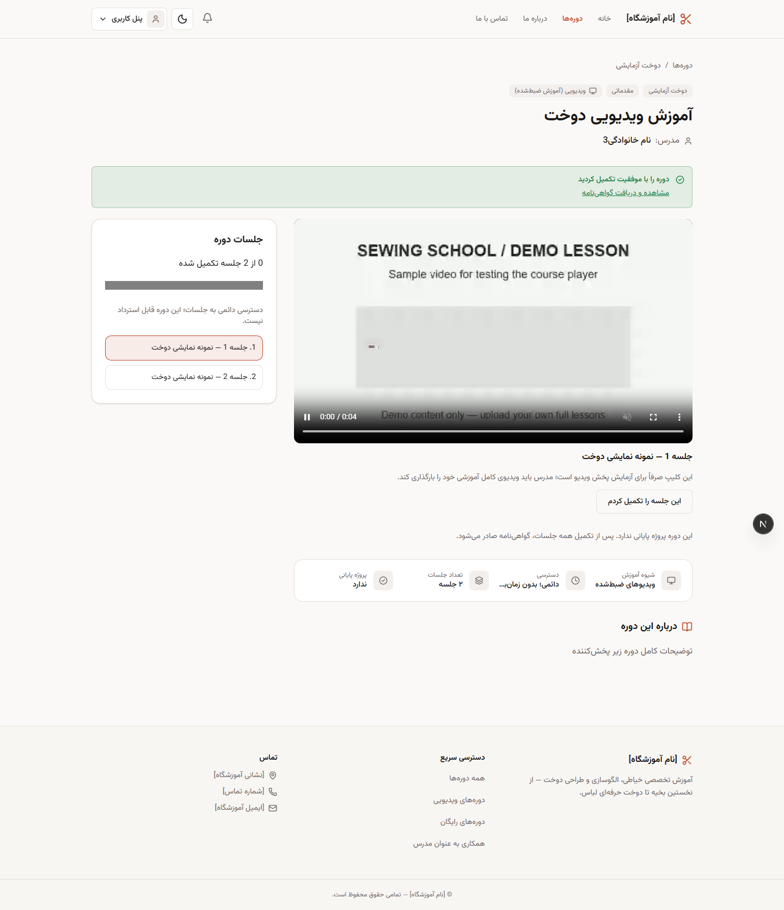
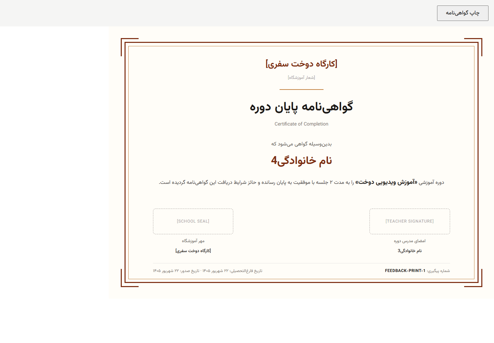

هنرجو
انتخاب، یادگیری و پیگیری پیشرفت
- جستوجوی دوره و ثبت علاقهمندی
- خرید، کیف پول و سوابق ثبتنام
- مشاهده ویدیو و ارسال پروژه
- دریافت گواهینامه و تیکت پشتیبانی
پروژه دانشگاهی · آموزش مهارتهای خیاطی
سامانهای برای مدیریت آموزشگاه خیاطی؛ از ساخت و تأیید دوره تا خرید، یادگیری، ارزیابی و صدور گواهینامه. آموزش ویدیویی و کلاس حضوری، در یک وبسایت فارسی.

۰۱ / مسئله و راهحل
وقتی ثبتنام، برنامه کلاس، پرداخت و ارزیابی در ابزارهای جدا انجام میشوند، پیگیری مسیر هر هنرجو سخت میشود.
این پروژه اطلاعات دورهها و عملیات آموزشگاه را در یک سیستم کنار هم قرار میدهد. هنرجو مسیر یادگیری خود را میبیند، مدرس آموزش را آماده میکند و مدیریت بر انتشار محتوا و اجرای قوانین نظارت دارد.
این صفحه کاتالوگ معرفی پروژه است. تصاویر، نمونههایی از وبسایت اصلی هستند؛ اطلاعات نمایشدادهشده در آنها آزمایشی است.
۰۲ / مسیر آموزش
در هر دو شیوه، انتشار دوره با تصمیم مدیریت انجام میشود. مدرس محتوای آموزشی را آماده میکند.
مدرس همه جلسههای ویدیویی را بارگذاری میکند و در صورت نیاز، پروژه پایانی تعریف میکند.
مدیر مجاز دوره را بررسی میکند. تأیید یعنی انتشار؛ رد دوره همراه با دلیل به مدرس اطلاع داده میشود.
هنرجو دوره را میخرد، جلسهها را در داشبورد میبیند و پیشرفت خود را دنبال میکند.
پس از تکمیل جلسهها و، در دورههای دارای پروژه، تأیید پروژه توسط مدرس، گواهینامه صادر میشود.
دسترسی به دوره خریداریشده مهلت انقضا ندارد. دوره ویدیویی بازپرداخت ندارد؛ دسترسی حساب محدودشده تا رفع محدودیت مسدود میماند.
مدرس دوره، ظرفیت، زمان برگزاری و کلاس را مشخص میکند؛ تداخل برنامهها بررسی میشود.
مدیر مجاز جزئیات را بررسی میکند و دوره تأییدشده در فهرست عمومی قرار میگیرد.
هنرجو با رعایت ظرفیت و شرایط دوره ثبتنام میکند؛ مدرس حضور و غیاب جلسهها را ثبت میکند.
نمرهها، اعتراض به نتیجه و شرایط دریافت گواهینامه در سامانه پیگیری میشوند.
زمانبندی، ظرفیت، پیشنیاز و تداخل کلاس اهمیت دارند. امکان و مبلغ بازپرداخت به زمان انصراف و قوانین دوره حضوری وابسته است.
اگر دوره پیش از انتشار رد شود، مدرس میتواند آن را اصلاح و دوباره ارسال کند. ویرایش محتوای دوره منتشرشده برای مدرس قفل میشود.
۰۳ / کاربران سیستم
سطح دسترسی در رابط کاربری و در سرور کنترل میشود؛ هر کاربر فقط عملیات مجاز خود را انجام میدهد.
انتخاب، یادگیری و پیگیری پیشرفت
آمادهسازی آموزش و ارزیابی
اداره بخشهای واگذارشده
کنترل کامل و تفویض اختیار
فقط مدیر اصلی میتواند مدیران اجرایی و مجوزهایشان را تغییر دهد. برای مدیران اجرایی، ۱۰ حوزه دسترسی مستقل تعریف شده است.
۰۴ / امکانات کلیدی
عملیات آموزشی، مالی و پشتیبانی در کنار هم قرار گرفتهاند تا سابقه هر مرحله قابل پیگیری باشد.
فهرست جلسهها، پخش ویدیو، توضیحات جلسه، ثبت پیشرفت و دسترسی دوره در داشبورد هنرجو.
پرداخت با کیف پول، درگاه یا سهم انتخابی از کیف پول بههمراه درگاه؛ تخفیف و سوابق تراکنش.
پروژه پایانی اختیاری در تعریف دوره؛ تأیید یا درخواست اصلاح توسط مدرس و نمایش، PDF و چاپ گواهینامه.
کاربر واردشده تیکت میفرستد. مدیر مجاز پاسخ میدهد و کاربر پاسخ را در حساب خود دریافت میکند.
فهرست کاربران، مدرسان، دورهها و گواهینامهها، گزارشهای مالی و فعالیتها با مجوز هر مدیر.
چیدمان راستبهچپ، حالت روشن و تیره و بازیابی گذرواژه با کد ششرقمی ایمیل و راهنمای بررسی اسپم.
در نسخه فعلی پروژه، درگاه پرداخت شبیهسازی شده است. ثبت خرید و گردش کیف پول پیادهسازی شدهاند؛ اتصال بانکی واقعی بخشی از راهاندازی عملیاتی آینده است.
۰۵ / نتیجه یادگیری
خرید دوره بهتنهایی گواهینامه ایجاد نمیکند.
سامانه شرایط آموزشی را بررسی میکند. هنرجو پس از احراز شرایط میتواند گواهینامه خود را ببیند، فایل PDF بگیرد یا آن را چاپ کند.
مشاهده تصویر کامل نمونه ↗نمونه آزمایشی با مشخصات، مهر و امضای نمایشی؛ این تصویر مدرک معتبر آموزشی نیست.

۰۶ / ساختار فنی
ظاهر صفحات در فرانتاند ساخته میشود. قوانین آموزشی، مالی و دسترسیها در بکاند اجرا میشوند.
رایانه یا تلفن همراه
TypeScript · Tailwind CSS
مجوزها، دوره، خرید و ارزیابی
رکوردها و فایلهای آموزشی
دریافت ویدیو نیازمند مجوز است؛ محدودیت حساب اعمال میشود؛ کد بازیابی یکبارمصرف و دارای زمان انقضاست؛ رویدادهای مهم در گزارش فعالیت ثبت میشوند.
۰۷ / درباره پروژه
پوشش یک مسیر کامل برای آموزشگاه خیاطی: تولید محتوا، تأیید مدیریت، ثبتنام، پرداخت، یادگیری، ارزیابی و گواهینامه. قوانین متفاوت دوره حضوری و ویدیویی و دسترسی مدیران نیز در همین مسیر اعمال میشوند.
خیر. مدرس دوره کامل را برای بررسی میفرستد؛ مدیر اصلی یا مدیر اجرایی دارای مجوز دورهها، آن را تأیید و منتشر میکند یا با دلیل رد میکند.
کاربر همچنان میتواند وارد حساب شود و دلیل محدودیت را ببیند یا از پشتیبانی کمک بگیرد، اما خرید، ثبتنام و تماشای ویدیوهای خریداریشده تا رفع محدودیت غیرفعال میشود.
محتوای آموزشی و مشخصات واقعی آموزشگاه، میزبانی با HTTPS، درگاه پرداخت واقعی، برنامه پشتیبانگیری و ارزیابی امنیت و ظرفیت. نسخه فعلی برای نمایش دانشگاهی با دادههای آزمایشی آماده شده است.
خیر. این کاتالوگ یک وبسایت مستقل و عمومی برای معرفی پروژه است و بدون اجرای سرور اصلی باز میشود. ورود کاربران، خرید و پخش دورهها در برنامه اصلی انجام میشوند.